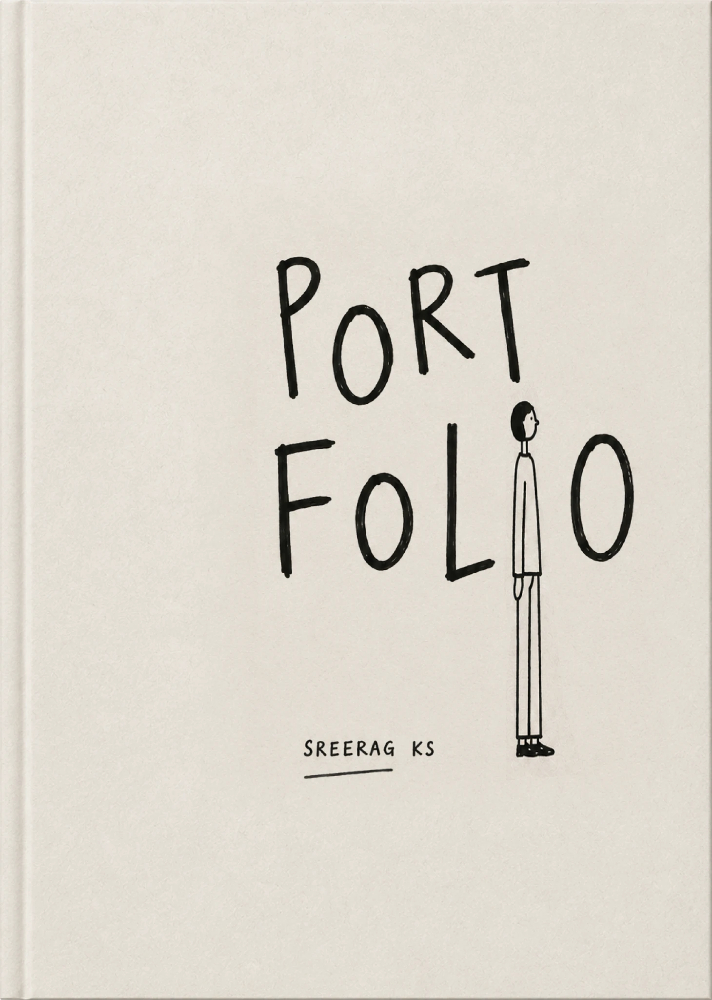

Your browser doesn't support 3D rendering.Try Chrome, Firefox, or Edge for the full interactive experience.

![Logo]()